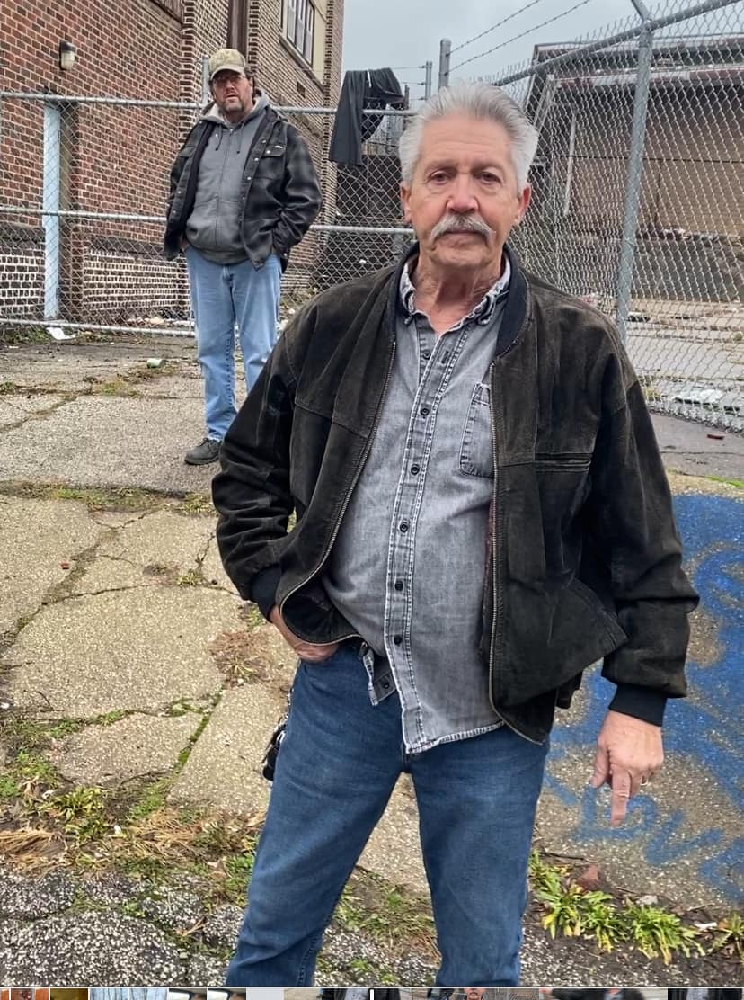

Mobile uploads
See this guy?
I don’t know who he is. But he has done more for neighbor relations with me and the next door Catholic Church than anyone has in the last 7 years.
I think he might be the groundskeeper.
He and I had it out today. We were cussin’ and swearing at each other.
He was pissed because the people squatting in my condemned house cut his fence and threw trash all over his property.
I was pissed because I am not allowed to do a single thing to shelter these people and then I get blamed when homeless people start breaking stuff and messing with the local businesses. (A city council person once told me that They will blame me for everything homeless. That’s true.)
It turns out he just is sick and tired of Emo and John (more on them later) for throwing trash all over his property.
Well that’s easy. I hired Josh for $30 to clean it up. And I agreed to keep it cleaned up.
He then said that they could continue to cut through if we just keep it clean.
I’m angry at the Catholic Church for many reasons. I was most angry at my neighbor Catholic Church because this nuisance inspector from the city told me the church called to tear down a little structure people were sleeping in. That was a lie. The city just wanted to pit me against my neighbor. Governments are experts at making us hate each other.
I had been planning a protest in front of this church. I have been so angry at what I thought I knew. But it turned out what I thought I knew wasn’t the full truth.
This guy told me his perspective. Everything I thought wasn’t quite accurate.
He single handedly shifted my perspective on that church.
Why hadn’t I talked directly to the church? Why hadn’t the priest talked to me?
Why was it the handyman that needed to be the moderator of everything?
Wars start like this. No one talking to no one.
Thanks man. I appreciate you being willing to engage with me.
One of the jobs homeless people are great at is cleaning trash. They like to do it and I pay them to do it as often as I’m able.
If you are able to help support these cleanup projects I’d greatly appreciate it. You can donate here:
https://donorbox.org/help-your-homeless-neighbor
Place: The Catholic Community of Visitation of Mary (41.07255, -81.48859)
Address: 55 Broad Street, Akron, OH